Práctica 3.4: Despliegue de una aplicación Node.js en Heroku (PaaS) y una aplicación React en Netlify (PaaS)
Introducción
En la práctica anterior hemos visto cómo desplegar una aplicación de Node.js sobre un servidor Express en local (en nuestro propio servidor Debian).
La práctica anterior podría asemejarse a las pruebas que realiza un desarrollador antes de pasar su aplicación al entorno de producción.
Ya sabemos que entendemos el despliegue o deployment como el proceso de mover nuestro código típicamente de un sistema de control de versiones a una plataforma de hosting donde se aloja y es servida a los usuarios finales.
A la hora de desplegar la aplicación en producción, podría utilizarse el método de copiar los archivos al servidor concreto vía el vetusto FTP, SSH u otros y desplegarla para dejarla funcionando. No obstante, esta práctica se acerca más a la realidad ya que utilizaremos un repositorio de Github y una plataforma de PaaS (Platform as a Service) como Heroku o Netlify para desplegar adecuadamente nuestra aplicación en producción.
¿Qué es Github?
A pesar de que trataremos un poco más en profundidad Github en el siguiente tema, daremos una breve explicación aquí.
GitHub es un servicio basado en la nube que aloja un sistema de control de versiones (VCS) llamado Git. Éste permite a los desarrolladores colaborar y realizar cambios en proyectos compartidos, a la vez que mantienen un seguimiento detallado de su progreso.

El control de versiones es un sistema que ayuda a rastrear y gestionar los cambios realizados en un archivo o conjunto de archivos. Utilizado principalmente por ingenieros de software para hacer un seguimiento de las modificaciones realizadas en el código fuente, el sistema de control de versiones les permite analizar todos los cambios y revertirlos sin repercusiones si se comete un error.
¿Qué es Heroku?
Heroku es una solución de Plataforma como Servicio (PaaS) basada en la nube para que el cliente solo se preocupe de desarrollar su aplicación mientras Heroku se encarga de la infraestructura que hay detrás.
Para proporcionar este servicio se dispone de unos contenedores virtuales que son los encargados de mantener y ejecutar las aplicaciones. Estos contenedores virtuales son totalmente escalables bajo demanda. Tanto en número como en capacidades.

Una ventaja de elegir Heroku es su capacidad de soportar múltiples lenguajes de programación. Los principales a utilizar son: Node.js, Ruby, Python, Java, PHP, Go, Scala y Clojure. Aunque esta cantidad de lenguajes puede aumentar en el caso de utilizar Heroku Buildpacks, que permiten compilar las aplicaciones en multitud de ellos más.
Note
Tanto Github, como Heroku, como Netlify pueden ser controlados desde el terminal de nuestro Linux, por lo que seguiremos el procedimiento de contectarnos vía SSH a nuestro Debian y realizar las operaciones por terminal.
¿Qué es Netlify?
Netlify es un proveedor de alojamiento en la nube que proporciona servicios de backend sin servidor (serverless) para sitios web estáticos. Está diseñado para maximizar la productividad en el sentido de que permite a los desarrolladores (especialmente orientados al frontend), y a los ingenieros construir, probar y desplegar rápidamente sitios web/aplicaciones.
Funciona conectándose a un repositorio de GitHub, de donde extrae el código fuente. A continuación, ejecutará un proceso de construcción para pre-renderizar las páginas de nuestro sitio web/aplicación en archivos estáticos.
Hay numerosas razones a favor de usar Netlify, aquí están algunas de ellas:
-
Netlify hace que sea increíblemente sencillo desplegar un sitio web - de hecho, la forma más sencilla de lograrlo es utilizar GitHub, GitLab o Bitbucket para configurar el despliegue continuo.
-
Netlify hace que sea súper fácil lanzar un sitio web con su solución de gestión de DNS incorporada.
-
Podríamos desplegar fácilmente sólo una rama específica de nuestro proyecto Git - esto es útil para probar nuevas características que pueden o no llegar a la rama maestra/principal, o para determinar rápidamente cómo un PR (Pull Request) afectará a su sitio.
-
Netlify te permite previsualizar cualquier despliegue que hagas o quieras hacer - esto te permite a ti y a tu equipo ver cómo se verán los cambios en producción sin tener que desplegarlos en tu sitio existente.
-
Netlify proporciona una práctica función de envío de formularios que nos permite recoger información de los usuarios.
Creación de nuestra aplicación para Heroku
Tras loguearnos por SSH en nuestro Debian, nos crearemos un directorio para albergar la aplicacón con el nombre que queramos. En ese directorio, crearemos los 3 archivos (dos .html y un .js)que conformarán nuestra sencilla aplicación de ejemplo:
var http = require('http');
var fs = require('fs'); // para obtener los datos del archivo html
var port = process.env.PORT || 8080; //Para que funcione en Heroku ya que da error 137 con el puerto 3000
http.createServer(function (req, res) {
res.writeHead(200, { 'Content-Type': 'text/html' });
// req.url almacena el path o ruta de la URL
var url = req.url;
if (url === "/") {
// fs.readFile busca el archivo HTML
// el primer parámetro es el path al archivo HTML
// y el segundo es el callback de la función
// si el archivo no se encuentra, la función devuelve un error
// si el archivo se encuentra, el contenido del mismo se encuentra en pgres
fs.readFile("head.html", function (err, pgres) {
if (err)
res.write("HEAD.HTML NOT FOUND");
else {
// Las siguientes 3 lineas
// tienen la función de enviar el archivo html
// y finalizar el proceso de respuesta
res.writeHead(200, { 'Content-Type': 'text/html' });
res.write(pgres);
res.end();
}
});
}
else if (url === "/tailPage") {
fs.readFile("tail.html", function (err, pgres) {
if (err)
res.write("TAIL.HTML NOT FOUND");
else {
res.writeHead(200, { 'Content-Type': 'text/html' });
res.write(pgres);
res.end();
}
});
}
}).listen(port, function () {
console.log("SERVER STARTED PORT: 8080");
});
Ahora, tal y como hacemos siempre a la hora de crear nuestra aplicación Node.js, con el fin de crear el archivo package.json, utilizaremos en el terminal el comando:
Podemos probar que nuestra aplicación funciona perfectamente en local:
Y tras ello, debemos poder acceder, desde nuestra máquina anfitriona a http://IP-maq-virtual:8080
Ya con la aplicación creada y comprobada, podremos desplegarla en múltiples plataformas en la nube, como AWS, GCP, Azure, Digital Ocean, Heroku...
¡Ojo!
Para que nos funcione en Heroku, en el archivo package.json que se nos ha creado al hacer el npm init debemos hacerle una modificación.
En el bloque scripts, debemos borrar lo que haya dentro y dejar únicamente dentro de él:
De forma que Heroku sepa que comando utilizar para iniciar la aplicación tras desplegarla.
Proceso de despliegue en Heroku
Para trabajar con Heroku desde nuestro terminal, debemos instalar el propio CLI de Heroku. Consultando la documentación, vemos que hemos de ejecutar:
Y comprobamos que se ha instalado correctamente consultando su versión:
Lo siguiente será loguearnos en nuestra cuenta de Heroku mediante el terminal, para ello:
Esto en teoría nos abre una pestaña del navegador para loguearnos en nuestra cuenta. Puesto que estamos conectados por SSH a nuestra Debian, no sucederá esto ya que el único puerto por el que nos comunicamos es por el 22. Necesitaríamos un túnel SSH para redirigir los puertos de la máquina Debian remota a la nuestra y que nos abriese el navegador en nuestra máquina.Puesto que esto escapa de los objetivos del módulo y con el fin de agilizar el proceso, simplemente copiaremos la URL y la pegaremos en nuestro navegador para loguearnos.
Antes de continuar, conviene asegurarnos de que tenemos la última versión de git en nuestra Debian:
Ahora, dentro del directorio que habíamos creado previamente para nuestra aplicación, se trata de seguir unos sencillos pasos:
Tip
Aquí aparece explicado con lenguaje llano más adelante en el módulo ya hablaremos con mayor propiedad de estas acciones con git
-
Nos aseguramos de que nuestro directorio no es aún un repositorio:
git statusY lo iniciamos:
git init
-
Ahora añadimos todos los archivos presentes en el directorio (
.) para ser enviados al repositorio:git add .Y los preparamos para que sean envidos al repositorio:
git commit -m "Comentario explicativo del commit"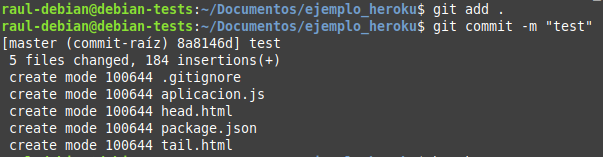
-
Creamos nuestra aplicación en Heroku:
heroku create
Esto creará un git remoto que conectará con nuestro repositorio git local
-
Desplegamos nuestra aplicación en el server de Heroku :
git push heroku masterY comprobamos que la instancia está corriendo:
heroku ps:scale web=1
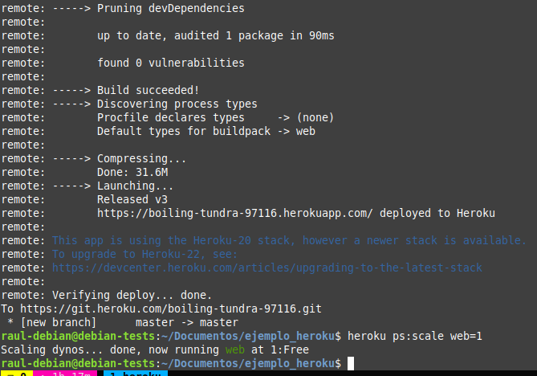
-
El comando
heroku openabriría nuestra aplicación en el navegador. Sin embargo, por el problema explicado antes de estar conectados por SSH, esto no ocurrirá. No obstante, podemos acceder a nuestra aplicación de otra forma rápida y sencilla desde nuestro dashboard de Heroku:-
Localizamos nuestra aplicación:
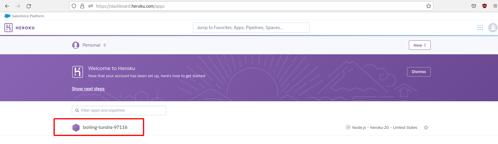
-
Y tras hacer click en ella, localizamos el botón que nos permite abrirla y volvemos a hacer click:

-
Comprobando que nuestra aplicación, efectivametne se ha desplegado en Heroku y funciona a la perfección:

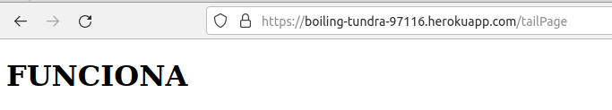
-
Aplicación para Netlify
Puesto que el interés en este módulo radica en el proceso de despliegue, suponiendo que la parte de desarrollo ya es abordada en otros módulos, vamos a utilizar una aplicación de ejemplo que nos ahorre tiempo para centrarnos en el despliegue.
Nos clonaremos este repositorio:
git clone https://github.com/StackAbuse/color-shades-generator
Proceso de despliegue en Netlify
Por mera curiosidad y ambición de aprendizaje, vamos a ver dos métodos de despliegue en Netlify:
- Despliegue manual desde el CLI de Netlify, es decir, desde el terminal, a partir de un directorio local de nuestra máquina.
- Despliegue desde un código publicado en uno de nuestros repositorios de Github
El primero nos permitirá conocer el CLI de Netlify y el segundo nos acercara más a una experiencia real de despliegue.
Task
Vuestra primera tarea será registraros en Netlify con vuestro email (no con vuestra cuenta de Github) y decirle que no cuando os pida enlazar con vuestra cuenta de Github (lo haremos más adelante).
Despliegue mediante CLI
Una vez registrados, debemos instalar el CLI de Netlify para ejecutar sus comandos desde el terminal:
Está claro que para realizar acciones de deploy, Netlify nos solicitará una autenticación, esto se hace mediante el comando:
El cual nos muestra una pantalla del navegador para que concedamos la autorización pertinente. Sin embargo, recordemos el problema de que estamos conectados por SSH a nuestro servidor y no tenemos la posibilidad del uso de un entorno gráfico.
En este caso, siguiendo las instrucciones de la documentación:
-
Generamos el token de acceso
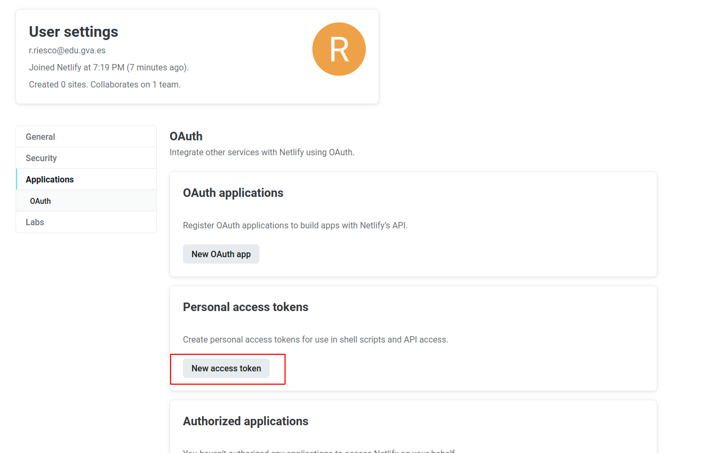
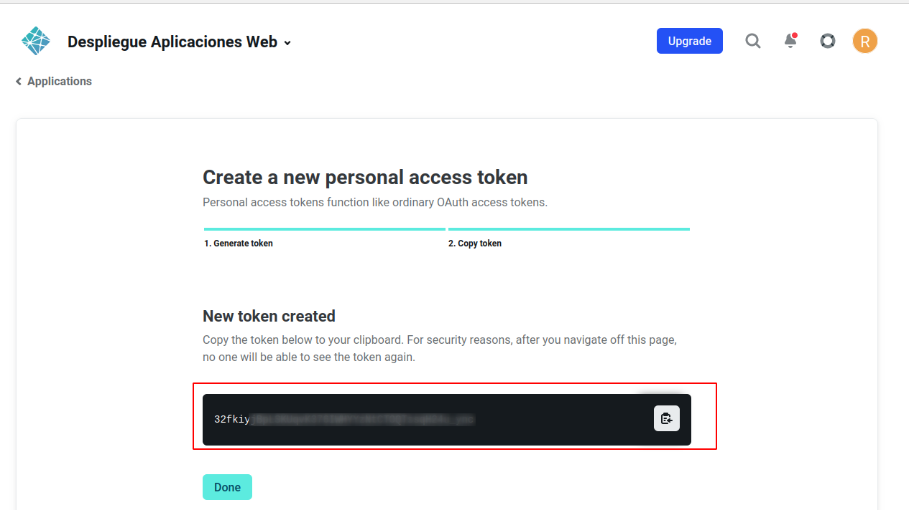
-
Lo establecemos como variable de ambiente:
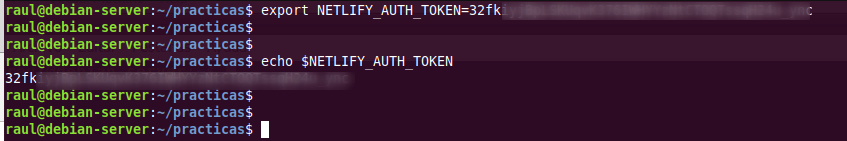
Y nos logueamos
Bueno, tenemos el código de nuestra aplicación, tenemos nuestra cuenta en Netlify y tenemos el CLI necesario para ejecutar comandos desde el terminal en esa cuenta... ¿Podemos proceder al despliegue sin mayores complicaciones?
La respuesta es NO, como buenos desarrolladores y en base a experiencias anteriores, ya sabéis que hay que hacer un build de la aplicación para, posteriormente, desplegarla. Vamos a ello.
En primer lugar, como sabemos, debemos instalar todas las dependencias que vienen indicadas en el archivo package.json:
Esto nos creará una nueva carpeta llamada build que contendrá la aplicación que debemos desplegar. Y ya podemos hacer un pre-deploy de la aplicación de la que hemos hecho build antes:
- Indicamos que queremos crear y configurar un nuevo site
- El Team lo dejamos por defecto
- Le indicamos el nombre que queremos emplear para la web (
nombre-practica3-4) y el directorio a utilizar para el deploy (directorio./build).
Y si nos indica que todo ha ido bien e incluso podemos ver el "borrador" (Website Draft URL) de la web que nos aporta, podemos pasarla a producción finalmente tal y como nos indica la misma salida del comando:
If everything looks good on your draft URL, deploy it to your main site URL with the --prod flag.
netlify deploy --prod
Warning
No olvides desplegar finalmente en producción y comprobar que puedes acceder a la URL.
Despliegue mediante conexión con Github
En primer lugar, vamos a eliminar el site que hemos desplegado antes en Netlify para evitarnos cualquier problema y/o conflicto:
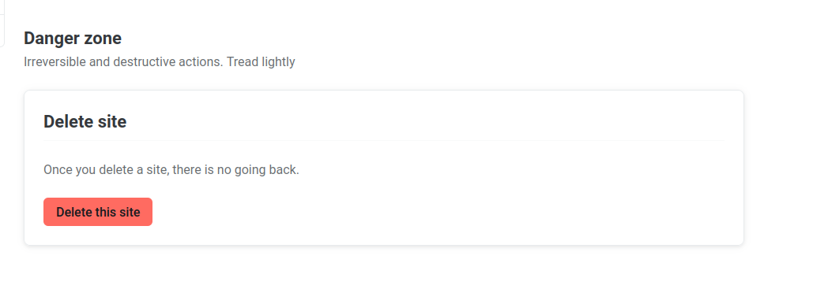
En segundo lugar, vamos a borrar el directorio donde se halla el repositorio clonado en el paso anterior para así poder empezar de 0:
Como queremos simular que hemos picado el código a man o en local y lo vamos a subir a Github por primera vez, nos descargaremos los fuentes en formato .zip sin que tenga ninguna referencia a Github:
Entramos en la carpeta donde está el código:
Ahora debemos crear un repositorio completamente vacío en Github que se llamepracticaTresCuatro:

Y tras ello, volviendo al terminal a la carpeta donde estábamos, la iniciamos como repositorio, añadimos todo el contenido de la misma para el commit, hacemos el commit con el mensaje correspondiente y creamos la rama main:
Y ahora sólo queda referenciar nuestra carpeta al repositorio recién creado en Github y hacer un push para subir todo el contenido del commit a él:
$ git remote add origin https://github.com/username/practicaTresCuatro.git
$ git push -u origin main
Ahora que ya tenemos subido el código a GitHub, de alguna manera debemos enganchar o enlazar nuestra cuenta de Github con la de Netlify para que éste último pueda traerse el código de allí, hacer el build y desplegarlo. Así pues, entramos en nuestro dashboard de Netlify y le damos a importar proyecto existente de git:
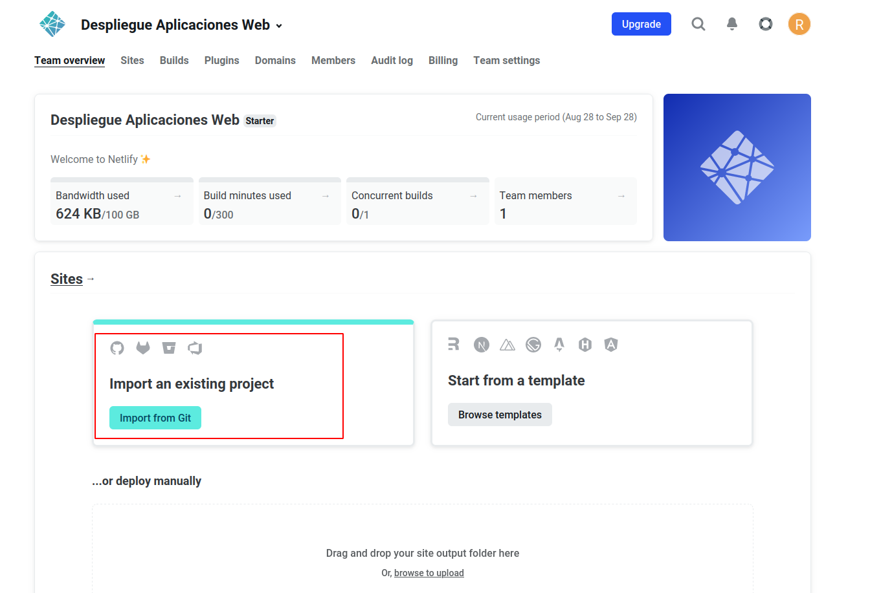
Le indicamos que concretamente de Github:
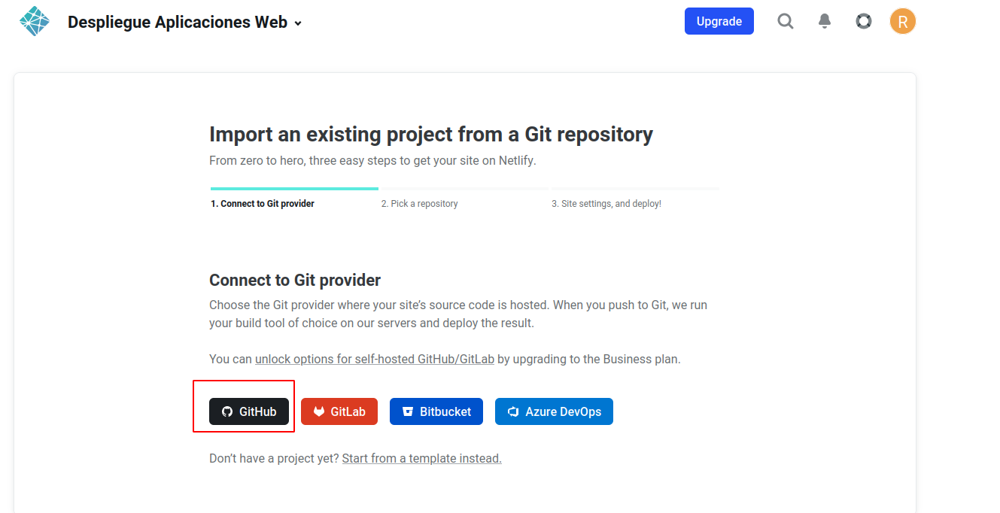
Y nos saltará una ventana pidiendo que autoricemos a Netlify a acceder a nuestros repositorios de Github:

Y luego le indicaremos que no acceda a todos nuestros repositorios sino sólo al repositorio que necesitamos, que es donde tenemos el código de nuestra aplicación:

Y ya quedará todo listo:

Y desplegamos la aplicación:

Netlify se encargará de hacer el build de forma automática tal y como hemos visto en la imagen de arriba, con el comando npm run build, publicando el contenido del directorio build.
Atención
Tras el deploy, en "Site settings" podeís y debéis cambiar el nombre de la aplicación por nombre-practica3-4, donde nombre es vuestro nombre.
Lo que hemos conseguido de esta forma es que, cualquier cambio que hagamos en el proyecto y del que hagamos commit y push en Github, automáticamente genere un nuevo despliegue en Netlify. Es el principio de lo que más adelante veremos como despliegue continuo.
Comprobemos que realmente es así:
-
Dentro de la carpeta
publicencontramos el archivorobots.txt, cuyo cometido es indicar a los rastreadores de los buscadores a qué URLs del sitio pueden acceder. A este archivo se puede acceder a través de la URL del site: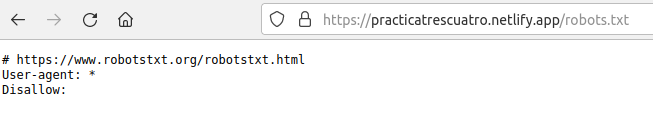
-
Dentro de la carpeta
public, utilizando el editor de texto que prefiráis en vuestro terminal, modificad el archivorobots.txtpara que excluya un directorio que se llamenombre_apellido, utilizando obviamente vuestro nombre y apellido. -
Haz un nuevo
commitypush(del caso anterior, recuerda el commandogitprevio para añadir los archivos a hacer commit) -
Comprueba en el dashboard de Netlify que se ha producido un nuevo deploy de la aplicación hace escasos segundos
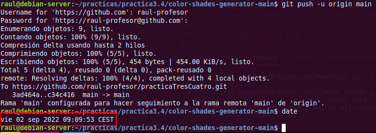
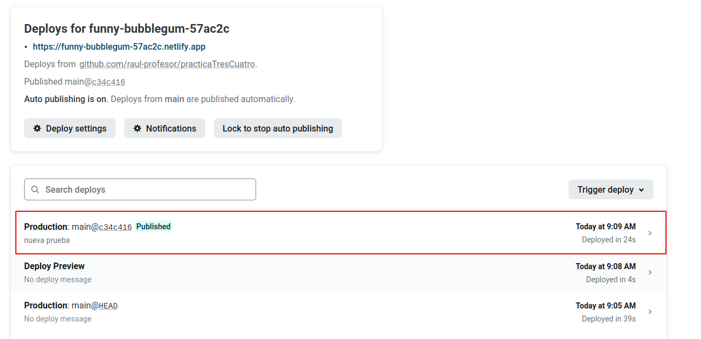
-
Accede a
https://url_de_la_aplicacion/robots.txty comprueba que, efectivamente, se ve reflejado el cambio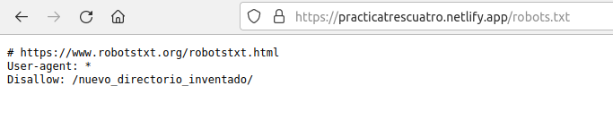
Cuestiones
-
Investiga y explica que es un Dyno en terminología Heroku.
-
En Heroku no todo es de color de rosa, tiene sus limitaciones y desventajas. Busca, investiga y explica algunas de ellas detalladamente.
Task
Documenta la realización de toda esta práctica adecuadamente, con las explicaciones y justificaciones necesarias y las capturas de pantalla pertinentes.
Referencias
Deploying Node.js applications
List of all limitations in Heroku platform
How to deploy your website to Netlify for free
4 Ways To Deploy Your Static Site with Netlify
Guide to Deploying a React App to Netlify
Evaluación
| Criterio | Puntuación |
|---|---|
| Despliegue correcto y bien documentado en Heroku | 2 puntos |
| Despliegue correcto y bien documentado en Netlify mediante CLI | 0.75 puntos |
| Despliegue correcto y bien documentado en Netlify de forma manual desde el dashboard | 2 puntos |
| Cambio de nombre del site | 0.25 puntos |
| Comprobación correcta y bien documentada de despliegue automático al hacer push en Github | 3 puntos |
| Respuestas correctas a las cuestiones | 1 puntos |
| Se ha prestado especial atención al formato del documento, utilizando la plantilla actualizada y haciendo un correcto uso del lenguaje técnico | 1 puntos |